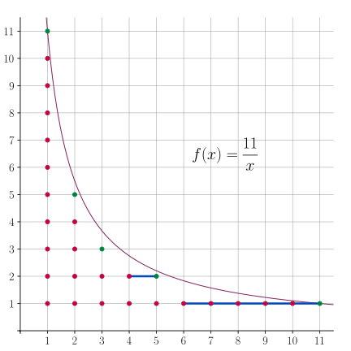
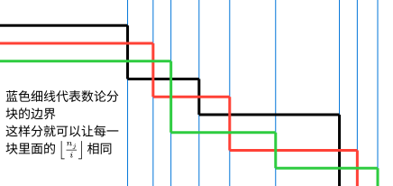

OI Wiki · prijevod · MatematikaOI Wiki · translation · Mathematics
Blokovsko dijeljenje po cjelobrojnom kvocijentuFloor-division blocks
Sadržaj
Blokovsko dijeljenje po cjelobrojnom kvocijentu (number-theoretic blocking) omogućuje brzo računanje suma oblika
Ako se \(\sum_{i=l}^{r}f(i)\) može izračunati u vremenu \(O(1)\) ili su prefiksne sume (prefix sums) funkcije \(f\) već predračunate, blokovsko dijeljenje po cjelobrojnom kvocijentu može izračunati vrijednost gornje sume u vremenu \(O(\sqrt{n})\).
Blokovsko dijeljenje po cjelobrojnom kvocijentu često se kombinira s tehnikama poput Möbiusove inverzije.
Ideja
Najprije ćemo ideju blokovskog dijeljenja po cjelobrojnom kvocijentu objasniti na jednostavnom primjeru. Pretpostavimo da treba prebrojati cjelobrojne točke ispod hiperbole prikazane na slici:

To je isto što i računanje sume:
To je poseban slučaj gore navedene sume uz \(f(k)=1,~g(k)=k\).
Najjednostavniji je postupak, dakako, računati stupac po stupac i zbrajati, ali tada treba izračunati broj cjelobrojnih točaka u svakom od stupaca \(i=1,2,\cdots,11\). Promatranjem slike može se uočiti da se ti stupci točaka mogu podijeliti u \(5\) blokova, a unutar svakog bloka stupci točaka imaju jednaku visinu i tvore pravokutnu rešetku točaka. Stoga, ako znamo širine tih blokova, prebrojavanje možemo brzo dovršiti računajući veličine tih pravokutnih blokova.
To je osnovna ideja blokovskog dijeljenja po cjelobrojnom kvocijentu.
Svojstva
U ovom odjeljku razmatramo nekoliko tvrdnji o podjeli cjelobrojnih točaka ispod hiperbole \(y = \dfrac{n}{x}\) u blokove. Konkretno, cijele brojeve između \(1\sim n\) treba podijeliti u blokove prema vrijednosti \(\left\lfloor\dfrac{n}{i}\right\rfloor\). Neka je
To je skup svih mogućih vrijednosti izraza \(\left\lfloor\dfrac{n}{i}\right\rfloor\).
Prvo, takvih različitih vrijednosti ima samo \(O(\sqrt{n})\). Stoga blokovsko dijeljenje po cjelobrojnom kvocijentu daje samo \(O(\sqrt{n})\) blokova.
Svojstvo 1
\(|D(n)|\le 2\sqrt{n}\).
Dokaz
Razlikujemo dva slučaja:
- Kad je \(i\le\sqrt{n}\), \(i\) poprima najviše \(\sqrt{n}\) vrijednosti, pa i \(\left\lfloor\dfrac{n}{i}\right\rfloor\) poprima najviše \(\sqrt{n}\) vrijednosti.
- Kad je \(i>\sqrt{n}\), \(\left\lfloor\dfrac{n}{i}\right\rfloor \le\dfrac{n}{i} < \sqrt{n}\) također poprima najviše \(\sqrt{n}\) vrijednosti.
Dakle, ukupan broj svih mogućih vrijednosti je \(|D(n)|\le 2\sqrt{n}\).
Pažljivijom analizom skup \(D(n)\) i njegova veličina mogu se zapravo precizno opisati.
Svojstvo 2
Neka je \(s = \lfloor\sqrt{n}\rfloor\). Elementi skupa \(D(n)\), poredani od najmanjeg prema najvećem, jesu
Nadalje, \(|D(n)| = \lfloor \sqrt{4n+1}\rfloor - 1\).
Dokaz
Najprije, za \(1 \le i \le s\) može se dokazati \(\left\lfloor\dfrac{n}{\lfloor n/i\rfloor}\right\rfloor = i\). Neka je \(d = \left\lfloor\dfrac{n}{i}\right\rfloor\); treba dokazati \(\left\lfloor\dfrac{n}{d}\right\rfloor = i\). Zapisano nejednakostima, to znači da iz poznatog \(d \le \dfrac{n}{i} < d + 1\) treba dokazati \(i \le \dfrac{n}{d} < i + 1\). Poznati se uvjet može zapisati kao \(i\le\dfrac{n}{d} < i + \dfrac{i}{d}\), pa je dovoljno dokazati \(\dfrac{i}{d} \le 1\), tj. \(i \le d = \left\lfloor\dfrac{n}{i}\right\rfloor\). To je ekvivalentno s \(i \le \dfrac{n}{i}\), što vrijedi za sve \(1 \le i \le s \le \sqrt{n}\).
Taj rezultat zapravo pokazuje da preslikavanje \(i \mapsto \left\lfloor\dfrac{n}{i}\right\rfloor\) čini bijekciju između skupa \(\{i:1\le i \le s\}\) i skupa \(\left\{\left\lfloor\dfrac{n}{i}\right\rfloor: 1\le i\le s\right\}\). Budući da su svi \(i\) međusobno različiti, i vrijednosti \(\left\lfloor\dfrac{n}{i}\right\rfloor\) međusobno su različite. Jedini elementi tih dvaju skupova koji se mogu podudarati jesu \(s\) i \(\left\lfloor\dfrac{n}{s}\right\rfloor\). Stoga je \(|D(n)|=2s - \left[s = \lfloor n/s\rfloor\right]\).
Da bismo dobili konačni izraz za \(|D(n)|\), treba ispitati kada vrijedi \(s = \left\lfloor\dfrac{n}{s}\right\rfloor\).
- Kad je \(s = \left\lfloor\dfrac{n}{s}\right\rfloor\), uvijek vrijedi \(s \le \dfrac{n}{s} < s + 1\), tj. \(s^2 \le n < s^2+s\). Tada je \(4s^2 + 1 \le 4n + 1 < 4s^2+4s+1 = (2s+1)^2\). Budući da je \(4n+1\) nužno neparan, lijeva se strana može ekvivalentno olabaviti na \(4s^2\), pa je taj uvjet ekvivalentan s \(2s \le \sqrt{4n+1} < 2s+1\), tj. \(\lfloor \sqrt{4n+1}\rfloor = 2s\).
- Kad je \(s < \left\lfloor\dfrac{n}{s}\right\rfloor\), uvijek vrijedi \(s + 1 \le \dfrac{n}{s}\), tj. \(s^2 + s\le n\). Budući da je još \(n < (s+1)^2\), imamo \(s^2 + s\le n < (s+1)^2\). To je ekvivalentno s \((2s+1)^2\le 4n+1 < 4(s+1)^2+1\). Ponovno iskoristivši to da je \(4n+1\) neparan, desna se strana može ekvivalentno pooštriti na \(4(s+1)^2\), pa je taj uvjet ekvivalentan s \(2s+1\le\sqrt{4n+1} < 2s+2\), tj. \(\lfloor \sqrt{4n+1}\rfloor = 2s+1\).
Objedinjavanjem tih dvaju slučajeva dobivamo da vrijedi \(|D(n)| = \lfloor \sqrt{4n+1}\rfloor - 1\).
Zatim, lijevi i desni kraj pojedinog bloka lako je odrediti.
Svojstvo 3
Za \(d\in D(n)\), svi cijeli brojevi \(i\) koji zadovoljavaju \(\left\lfloor\dfrac{n}{i}\right\rfloor=d\) nalaze se u rasponu
Dokaz
Budući da je \(\left\lfloor\dfrac{n}{i}\right\rfloor=d\) isto što i nejednakost
To je nadalje ekvivalentno s
Iskoristivši to da je \(i\in\mathbf N_+\), na tu nejednakost možemo primijeniti zaokruživanje na cijeli broj, pa je ona ekvivalentna s
To svojstvo odražava i simetriju slike: skup desnih krajeva svih blokova (zelene točke na gornjoj slici) upravo je \(D(n)\). To je lako razumjeti jer je cijela slika simetrična s obzirom na pravac \(y=x\).
Osim tih svojstava, skup \(D(n)\) ima i lijepo rekurzivno svojstvo:
Svojstvo 4
Za \(m\in D(n)\) vrijedi \(D(m)\subseteq D(n)\).
Dokaz
Neka je \(m = \left\lfloor\dfrac{n}{k}\right\rfloor\). Tada, budući da za sve \(i\in\mathbf N_+\) vrijedi
slijedi \(D(m)\subseteq D(n)\). Pritom druga jednakost koristi svojstvo funkcije zaokruživanja za ugniježđene razlomke.
Već je spomenuto da je \(D(n)\) i skup vrijednosti \(\left\lfloor\dfrac{n}{i}\right\rfloor\) po blokovima i skup desnih krajeva blokova. To znači da, ako blokovsko dijeljenje po cjelobrojnom kvocijentu primjenjujemo rekurzivno (tj. vrijednost funkcije u \(n\) ovisi o njezinim vrijednostima u \(m\in D(n)\setminus\{n\}\)), skup vrijednosti i skup desnih krajeva koji se pojavljuju tijekom cijelog računanja zapravo su upravo \(D(n)\). Tipičan je primjer Du sito.
Postupak
Iz tvrdnji iz prethodnog odjeljka dobiva se konkretan postupak blokovskog dijeljenja po cjelobrojnom kvocijentu.
Da bismo izračunali vrijednost sume
indekse \(i=1,2,\cdots,n\) možemo podijeliti u blokove prema vrijednosti \(\left\lfloor\dfrac ni\right\rfloor\). Budući da indeksi s istom vrijednošću \(\left\lfloor\dfrac ni\right\rfloor\) čine segment uzastopnih cijelih brojeva \([l,r]\), vrijednost sume na tom bloku iznosi
Da bi se ta suma brzo izračunala, obično je potrebno moći brzo izračunati lijevu sumu po \(f\). Ponekad je izraz za tu sumu poznat, pa se jedno računanje obavi u vremenu \(O(1)\); ponekad se mogu predračunati njezine prefiksne sume, pa se jedan upit i dalje obavi u vremenu \(O(1)\).
Pri redom računanju lijevih i desnih krajeva svakog bloka, lijevi kraj \(l\) trenutnog bloka jednak je desnom kraju prethodnog bloka uvećanom za \(1\), a desni kraj trenutnog bloka jednak je \(\left\lfloor\dfrac n{\lfloor n/l\rfloor}\right\rfloor\). Iz toga se dobiva sljedeći pseudokod:
Pretpostavimo li da je vremenska složenost jednog računanja \(s(\cdot)\) jednaka \(O(1)\), vremenska je složenost cijelog postupka \(O(\sqrt{n})\).
Proširenja
Dosad smo razmatrali najčešći i najosnovniji oblik blokovskog dijeljenja po cjelobrojnom kvocijentu. U ovom odjeljku razmatramo njegove proširene oblike.
Blokovsko dijeljenje s gornjim cijelim dijelom
Blokovsko dijeljenje po cjelobrojnom kvocijentu može se koristiti i za računanje suma koje sadrže gornji cijeli dio (zaokruživanje naviše):
Budući da je \(\left\lceil\dfrac ni\right\rceil = \left\lfloor\dfrac {n-1}i\right\rfloor + 1\), ta se suma može svesti na slučaj s donjim cijelim dijelom:
Uočite da se gornja granica sumacije promijenila te da se član za \(i=n\) pojavljuje zasebno.
Višedimenzionalno blokovsko dijeljenje
Blokovsko dijeljenje po cjelobrojnom kvocijentu može se koristiti i za sume koje sadrže više od jednog izraza s cijelim dijelom:
Pritom obično vrijedi \(n\le\min\{n_1,n_2,\cdots,n_m\}\); inače treba zasebno obraditi slučaj kad je neki \(\lfloor n_j/i\rfloor=0\). Da bismo primijenili ideju blokovskog dijeljenja, treba osigurati da se unutar svakog bloka vrijednosti svih izraza \(\left\lfloor\dfrac {n_1}i\right\rfloor,\left\lfloor\dfrac {n_2}i\right\rfloor,\cdots,\left\lfloor\dfrac {n_m}i\right\rfloor\) ne mijenjaju, odnosno višedimenzionalni blok treba biti presjek svih jednodimenzionalnih blokova. Zato je za poznati lijevi kraj \(l\) pripadni desni kraj
Drugim riječima, kao desni kraj višedimenzionalnog bloka uzima se minimum desnih krajeva svih jednodimenzionalnih blokova. To se može razumjeti pomoću sljedeće slike:

Najčešći je dvodimenzionalni oblik; tada se u gornjem pseudokodu \(r \gets \left\lfloor \dfrac{n}{\lfloor n/l \rfloor}\right\rfloor\) zamjenjuje s
Blokovsko dijeljenje s proizvoljnim eksponentima
Blokovsko dijeljenje po cjelobrojnom kvocijentu može se koristiti za računanje suma s izrazima s cijelim dijelom koji sadrže proizvoljne eksponente:
Pritom su \(\alpha,\beta\) pozitivni realni brojevi. U osnovnom obliku razmatranom u ovom tekstu vrijedi \(\alpha=\beta=1\).
Svojstvo
Za pozitivan cijeli broj \(n\) i pozitivne realne brojeve \(\alpha, \beta\) neka je
Tada vrijedi
- \(|D(n,\alpha,\beta)|\le 2n^{\alpha/(1+\beta)}\).
-
Za \(d\in D(n,\alpha,\beta)\), vrijednosti \(i\) za koje vrijedi \(\left\lfloor\dfrac{n^\alpha}{i^\beta}\right\rfloor=d\) nalaze se u rasponu
\[ \left\lfloor\dfrac{n^{\alpha/\beta}}{(d+1)^{1/\beta}}\right\rfloor + 1\le i \le \left\lfloor\dfrac{n^{\alpha/\beta}}{d^{1/\beta}}\right\rfloor. \]
Dokaz
Za prvu tvrdnju razlikujemo dva slučaja:
- Kad je \(i\le \dfrac{n^\alpha}{i^\beta}\), vrijedi \(i\le n^{\alpha/(1+\beta)}\), pa \(\left\lfloor\dfrac{n^\alpha}{i^\beta}\right\rfloor\) poprima najviše \(n^{\alpha/(1+\beta)}\) vrijednosti.
- Kad je \(i > \dfrac{n^\alpha}{i^\beta}\), vrijedi \(i> n^{\alpha/(1+\beta)}\), a odatle \(\dfrac{n^\alpha}{i^\beta} < n^{\alpha/(1+\beta)}\), pa i \(\left\lfloor\dfrac{n^\alpha}{i^\beta}\right\rfloor\) poprima najviše \(n^{\alpha/(1+\beta)}\) vrijednosti.
Objedinjavanjem obaju slučajeva dobivamo \(|D(n,\alpha,\beta)|\le 2n^{\alpha/(1+\beta)}\).
Za drugu tvrdnju, \(\left\lfloor\dfrac{n^\alpha}{i^\beta}\right\rfloor=d\) ekvivalentno je s
Zaokruživanjem te nejednakosti na cijele brojeve dobiva se druga tvrdnja.
Pomoću tih svojstava blokovsko dijeljenje po cjelobrojnom kvocijentu s proizvoljnim eksponentima može se provesti u vremenskoj složenosti \(O(n^{\alpha/(1+\beta)})\).
Primjer
Na primjer, sljedeća suma za \(\alpha=\beta=1/2\)
može se blokovskim dijeljenjem riješiti u vremenu \(O(n^{1/3})\). Kad je poznat lijevi kraj bloka \(l\), desni se kraj može izračunati kao \(r=\left\lfloor\dfrac{n}{\lfloor\sqrt{n/l}\rfloor^2}\right\rfloor\).
Primjeri zadataka
UVa11526 H(n)
Zadano je \(T\) skupova podataka, u svakom po jedan cijeli broj \(n\). Za svaki skup podataka ispišite \(\sum_{i=1}^n\left\lfloor\dfrac ni\right\rfloor\).
Rješenje
Prema prethodnoj analizi, svaki blok s jednakom vrijednošću \(\left\lfloor\dfrac ni\right\rfloor\) može se izračunati odjednom. Vremenska složenost je \(O(T\sqrt n)\).
Implementacija
#include <iostream>
long long H(int n) {
long long res = 0; // pohranjuje rezultat
int l = 1, r; // lijevi i desni kraj bloka
while (l <= n) {
r = n / (n / l); // izračunaj desni kraj trenutnog bloka
// pribroji doprinos ovog bloka rezultatu; množenje s 1LL sprječava prelijevanje
res += 1LL * (r - l + 1) * (n / l);
l = r + 1; // lijevi kraj pomakni na sljedeći blok
}
return res;
}
int main() {
std::ios::sync_with_stdio(false);
std::cin.tie(nullptr);
int t, n;
std::cin >> t;
while (t--) {
std::cin >> n;
std::cout << H(n) << '\n';
}
return 0;
}
Codeforces 1954E Chain Reaction
U redu stoji \(n\) čudovišta, a početno zdravlje svakog čudovišta je \(a_i\). Jedan napad smanjuje zdravlje neprekinutog niza živih čudovišta za \(k\); čudovište sa zdravljem ne većim od \(0\) smatra se mrtvim. Za svaki \(k\) odredite broj napada potrebnih da se ubiju sva čudovišta. Pritom je \(n,a_i\leq 10^5\).
Rješenje
Neka je \(a_0=0\). Pretpostavimo da je za ubijanje svih prvih \((i-1)\) čudovišta potrebno \(T(k,i-1)\) napada, a zdravlje \(i\)-tog čudovišta je \(a_i\). Budući da je pri ubijanju \((i-1)\)-og čudovišta potrebno napasti ga \(\lceil a_{i-1}/k\rceil\) puta, a svi se ti napadi mogu protegnuti i na \(i\)-to čudovište, za ubijanje \(i\)-tog čudovišta potrebno je još samo \(\max\{0,\lceil a_i/k\rceil-\lceil a_{i-1}/k\rceil\}\) napada. Stoga je ukupan broj napada
Budući da su \(n,k\) u zadatku prilično veliki, računanje te sume zasebno za svaki \(k\) nije izvedivo. Možemo za svaki \(i=1,2,\cdots,n\) održavati niz \(\{T(k,i)\}_k\). Početno neka je \(T(k,0)\equiv 0\). Pretpostavimo da je niz \(\{T(k,i-1)\}_k\) poznat i razmotrimo kako ga izmijeniti da bismo dobili niz \(\{T(k,i)\}_k\). Prema prethodnoj analizi, dovoljno je \(k\)-ti član niza uvećati za \(\max\left\{0,\left\lceil\dfrac{a_i}{k}\right\rceil-\left\lceil\dfrac{a_{i-1}}{k}\right\rceil\right\}\). Pomoću dvodimenzionalnog blokovskog dijeljenja ta se izmjena može rastaviti na \(O(\sqrt{a_{i-1}}+\sqrt{a_i})\) izmjena na intervalima, pri čemu je vrijednost koja se dodaje na svakom intervalu konstantna. Konačno dobiveni niz \(\{T(k,n)\}_k\) je odgovor.
Budući da se u zadatku pojavljuje niz operacija dodavanja na intervalu, a upiti se događaju tek nakon što su sve izmjene gotove, dodavanje na intervalu može se provoditi održavanjem niza razlika (difference array), a traženi se niz na kraju dobiva računanjem prefiksnih suma. Ukupna vremenska složenost je \(O(\max_i a_i+\sum_i\sqrt{a_i})\). Zadatak ima i druga rješenja.
Implementacija
#include <algorithm>
#include <iostream>
constexpr int N = 100009;
int n, a[N], maxn;
long long ans[N];
int main() {
std::ios::sync_with_stdio(false);
std::cin.tie(nullptr);
std::cin >> n;
for (int i = 1; i <= n; ++i) {
std::cin >> a[i];
maxn = std::max(maxn, a[i]);
}
for (int i = 0; i < n; ++i)
for (int l = 1, r;; l = r + 1) {
r = std::min(l < a[i] ? (a[i] - 1) / ((a[i] - 1) / l) : N,
l < a[i + 1] ? (a[i + 1] - 1) / ((a[i + 1] - 1) / l)
: N); // dvodimenzionalno blokovsko dijeljenje po cjelobrojnom kvocijentu
if (r == N) break;
int x = (a[i + 1] - 1) / l - std::max(a[i] - 1, 0) / l;
if (x > 0) ans[l] += x, ans[r + 1] -= x; // pribroji doprinos
}
++ans[0]; // formula ⌈a/l⌉=(a-1)/l+1 ne vrijedi za a=0, pa je potrebna korekcija
for (int i = 1; i <= maxn; ++i)
std::cout << (ans[i] += ans[i - 1]) << " \n"[i == maxn];
return 0;
}
Zadaci za vježbu
Literatura i napomene
Contents
Floor-division blocks (number-theoretic blocking) allow fast computation of sums of the form
If \(\sum_{i=l}^{r}f(i)\) can be computed in \(O(1)\) time, or the prefix sums of \(f\) have already been precomputed, floor-division blocks can compute the value of the above sum in \(O(\sqrt{n})\) time.
Floor-division blocks are often combined with techniques such as Möbius inversion.
Idea
First, we explain the idea of floor-division blocks with a simple example. Suppose we need to count the lattice points under the hyperbola shown in the figure:
This amounts to computing the sum:
This is the special case of the sum shown above with \(f(k)=1,~g(k)=k\).
The simplest method is, of course, to compute column by column and add up, but this requires computing the number of lattice points in each of the columns \(i=1,2,\cdots,11\). Looking at the figure, one can notice that these columns of points can be divided into \(5\) blocks, and within each block the columns of points have the same height, forming a rectangular grid of points. Therefore, as long as we know the widths of these blocks, we can quickly finish counting by computing the sizes of these rectangular blocks.
This is the basic idea of floor-division blocks.
Properties
This section discusses several results about dividing the lattice points under the hyperbola \(y = \dfrac{n}{x}\) into blocks. Specifically, the integers between \(1\sim n\) need to be divided into blocks according to the value of \(\left\lfloor\dfrac{n}{i}\right\rfloor\). Let
This is the set of all possible values of \(\left\lfloor\dfrac{n}{i}\right\rfloor\).
First, there are only \(O(\sqrt{n})\) such distinct values. Therefore, floor-division blocking yields only \(O(\sqrt{n})\) blocks.
Property 1
\(|D(n)|\le 2\sqrt{n}\).
Proof
We distinguish two cases:
- When \(i\le\sqrt{n}\), \(i\) takes at most \(\sqrt{n}\) values, so \(\left\lfloor\dfrac{n}{i}\right\rfloor\) also takes at most \(\sqrt{n}\) values.
- When \(i>\sqrt{n}\), \(\left\lfloor\dfrac{n}{i}\right\rfloor \le\dfrac{n}{i} < \sqrt{n}\) also takes at most \(\sqrt{n}\) values.
Therefore, the total number of all possible values is \(|D(n)|\le 2\sqrt{n}\).
With a more careful analysis, the set \(D(n)\) and its size can actually be described precisely.
Property 2
Let \(s = \lfloor\sqrt{n}\rfloor\). The elements of the set \(D(n)\), in increasing order, are
Furthermore, \(|D(n)| = \lfloor \sqrt{4n+1}\rfloor - 1\).
Proof
First, for \(1 \le i \le s\), one can prove \(\left\lfloor\dfrac{n}{\lfloor n/i\rfloor}\right\rfloor = i\). Let \(d = \left\lfloor\dfrac{n}{i}\right\rfloor\); we need to prove \(\left\lfloor\dfrac{n}{d}\right\rfloor = i\). Written as inequalities, this means that, knowing \(d \le \dfrac{n}{i} < d + 1\), we need to prove \(i \le \dfrac{n}{d} < i + 1\). The known condition can be written as \(i\le\dfrac{n}{d} < i + \dfrac{i}{d}\), so it suffices to prove \(\dfrac{i}{d} \le 1\), i.e. \(i \le d = \left\lfloor\dfrac{n}{i}\right\rfloor\). This is equivalent to \(i \le \dfrac{n}{i}\), which holds for all \(1 \le i \le s \le \sqrt{n}\).
This result actually shows that the map \(i \mapsto \left\lfloor\dfrac{n}{i}\right\rfloor\) is a bijection between the set \(\{i:1\le i \le s\}\) and the set \(\left\{\left\lfloor\dfrac{n}{i}\right\rfloor: 1\le i\le s\right\}\). Since the \(i\) are pairwise distinct, the values \(\left\lfloor\dfrac{n}{i}\right\rfloor\) are pairwise distinct as well. The only elements of the two sets that can possibly coincide are \(s\) and \(\left\lfloor\dfrac{n}{s}\right\rfloor\). Therefore, \(|D(n)|=2s - \left[s = \lfloor n/s\rfloor\right]\).
To obtain the final expression for \(|D(n)|\), we need to examine when \(s = \left\lfloor\dfrac{n}{s}\right\rfloor\) holds.
- When \(s = \left\lfloor\dfrac{n}{s}\right\rfloor\), we always have \(s \le \dfrac{n}{s} < s + 1\), i.e. \(s^2 \le n < s^2+s\). Then \(4s^2 + 1 \le 4n + 1 < 4s^2+4s+1 = (2s+1)^2\). Since \(4n+1\) is necessarily odd, the left side can be equivalently relaxed to \(4s^2\), so this condition is equivalent to \(2s \le \sqrt{4n+1} < 2s+1\), i.e. \(\lfloor \sqrt{4n+1}\rfloor = 2s\).
- When \(s < \left\lfloor\dfrac{n}{s}\right\rfloor\), we always have \(s + 1 \le \dfrac{n}{s}\), i.e. \(s^2 + s\le n\). Since also \(n < (s+1)^2\), we have \(s^2 + s\le n < (s+1)^2\). This is equivalent to \((2s+1)^2\le 4n+1 < 4(s+1)^2+1\). Using again that \(4n+1\) is odd, the right side can be equivalently tightened to \(4(s+1)^2\), so this condition is equivalent to \(2s+1\le\sqrt{4n+1} < 2s+2\), i.e. \(\lfloor \sqrt{4n+1}\rfloor = 2s+1\).
Combining these two cases, we get that \(|D(n)| = \lfloor \sqrt{4n+1}\rfloor - 1\) holds.
Next, the left and right endpoints of a single block are easy to determine.
Property 3
For \(d\in D(n)\), all integers \(i\) satisfying \(\left\lfloor\dfrac{n}{i}\right\rfloor=d\) lie in the range
Proof
Because \(\left\lfloor\dfrac{n}{i}\right\rfloor=d\) amounts to the inequality
This is further equivalent to
Using the fact that \(i\in\mathbf N_+\), we can round this inequality to integers, and it is equivalent to
This property also reflects the symmetry of the figure: the set of right endpoints of all blocks (the green points in the figure above) is exactly \(D(n)\). This is easy to understand, because the whole figure is symmetric with respect to the line \(y=x\).
Besides these properties, the set \(D(n)\) also has a nice recursive property:
Property 4
For \(m\in D(n)\), we have \(D(m)\subseteq D(n)\).
Proof
Let \(m = \left\lfloor\dfrac{n}{k}\right\rfloor\). Then, since for all \(i\in\mathbf N_+\) we have
it follows that \(D(m)\subseteq D(n)\). Here, the second equality uses the property of the floor function for nested fractions.
As mentioned above, \(D(n)\) is both the set of values of \(\left\lfloor\dfrac{n}{i}\right\rfloor\) over the blocks and the set of right endpoints of the blocks. This means that if floor-division blocks are applied recursively (i.e. the value of the function at \(n\) depends on its values at \(m\in D(n)\setminus\{n\}\)), then the set of values and the set of right endpoints involved in the whole computation are in fact both \(D(n)\). A typical example is Du's sieve.
Procedure
Using the results of the previous section, we obtain the concrete procedure of floor-division blocks.
To compute the value of the sum
we can divide the indices \(i=1,2,\cdots,n\) into blocks according to the value of \(\left\lfloor\dfrac ni\right\rfloor\). Since the indices with the same value of \(\left\lfloor\dfrac ni\right\rfloor\) form a segment of consecutive integers \([l,r]\), the value of the sum over this block is
To compute this sum quickly, we usually need to be able to compute the left sum over \(f\) quickly. Sometimes the expression for this sum is known and a single computation can be done in \(O(1)\) time; sometimes its prefix sums can be precomputed, and a single query can still be done in \(O(1)\) time.
When computing the left and right endpoints of each block in order, the left endpoint \(l\) of the current block equals the right endpoint of the previous block plus \(1\), and the right endpoint of the current block equals \(\left\lfloor\dfrac n{\lfloor n/l\rfloor}\right\rfloor\). From this, we obtain the following pseudocode:
Assuming that the time complexity of a single computation of \(s(\cdot)\) is \(O(1)\), the time complexity of the whole procedure is \(O(\sqrt{n})\).
Extensions
So far we have discussed the most common and most basic form of floor-division blocks. This section further discusses extended forms of floor-division blocks.
Floor-division blocks with ceilings
Floor-division blocks can be used to compute sums containing ceilings:
Since \(\left\lceil\dfrac ni\right\rceil = \left\lfloor\dfrac {n-1}i\right\rfloor + 1\), this sum can be converted to the floor case:
Note that the upper limit of summation has changed, and the term for \(i=n\) appears separately.
Multidimensional floor-division blocks
Floor-division blocks can also be used to handle sums containing more than one floor expression:
Here, usually \(n\le\min\{n_1,n_2,\cdots,n_m\}\); otherwise the case where some \(\lfloor n_j/i\rfloor=0\) needs to be handled separately. To apply the idea of floor-division blocks, we need to ensure that within each block the values of all floor expressions \(\left\lfloor\dfrac {n_1}i\right\rfloor,\left\lfloor\dfrac {n_2}i\right\rfloor,\cdots,\left\lfloor\dfrac {n_m}i\right\rfloor\) do not change, that is, a multidimensional block should be the intersection of all one-dimensional blocks. To this end, for a known left endpoint \(l\), the corresponding right endpoint is
In other words, the minimum of the right endpoints of all one-dimensional blocks is taken as the right endpoint of the multidimensional block. This can be understood with the following figure:
The two-dimensional form is the most common; in that case, \(r \gets \left\lfloor \dfrac{n}{\lfloor n/l \rfloor}\right\rfloor\) in the pseudocode above is replaced by
Floor-division blocks with arbitrary exponents
Floor-division blocks can be used to compute sums with floor expressions containing arbitrary exponents:
Here, \(\alpha,\beta\) are positive real numbers. In the basic form discussed in this article, \(\alpha=\beta=1\).
Property
For a positive integer \(n\) and positive real numbers \(\alpha, \beta\), let
Then we have
- \(|D(n,\alpha,\beta)|\le 2n^{\alpha/(1+\beta)}\).
-
For \(d\in D(n,\alpha,\beta)\), the values of \(i\) for which \(\left\lfloor\dfrac{n^\alpha}{i^\beta}\right\rfloor=d\) holds lie in the range
\[ \left\lfloor\dfrac{n^{\alpha/\beta}}{(d+1)^{1/\beta}}\right\rfloor + 1\le i \le \left\lfloor\dfrac{n^{\alpha/\beta}}{d^{1/\beta}}\right\rfloor. \]
Proof
For the first point, we distinguish two cases:
- When \(i\le \dfrac{n^\alpha}{i^\beta}\), we have \(i\le n^{\alpha/(1+\beta)}\), so \(\left\lfloor\dfrac{n^\alpha}{i^\beta}\right\rfloor\) takes at most \(n^{\alpha/(1+\beta)}\) values.
- When \(i > \dfrac{n^\alpha}{i^\beta}\), we have \(i> n^{\alpha/(1+\beta)}\), and hence \(\dfrac{n^\alpha}{i^\beta} < n^{\alpha/(1+\beta)}\), so \(\left\lfloor\dfrac{n^\alpha}{i^\beta}\right\rfloor\) also takes at most \(n^{\alpha/(1+\beta)}\) values.
Combining both cases, we have \(|D(n,\alpha,\beta)|\le 2n^{\alpha/(1+\beta)}\).
For the second point, \(\left\lfloor\dfrac{n^\alpha}{i^\beta}\right\rfloor=d\) is equivalent to
Rounding this inequality to integers gives the second statement.
Using these properties, floor-division blocks with arbitrary exponents can be implemented with time complexity \(O(n^{\alpha/(1+\beta)})\).
Example
For example, the following sum with \(\alpha=\beta=1/2\)
can be solved with floor-division blocks in \(O(n^{1/3})\) time. When the left endpoint of a block is \(l\), the right endpoint can be computed as \(r=\left\lfloor\dfrac{n}{\lfloor\sqrt{n/l}\rfloor^2}\right\rfloor\).
Example problems
UVa11526 H(n)
There are \(T\) test cases, each with one integer \(n\). For each test case, output \(\sum_{i=1}^n\left\lfloor\dfrac ni\right\rfloor\).
Solution
According to the analysis above, each block with the same value of \(\left\lfloor\dfrac ni\right\rfloor\) can be computed at once. The time complexity is \(O(T\sqrt n)\).
Implementation
#include <iostream>
long long H(int n) {
long long res = 0; // stores the result
int l = 1, r; // left and right endpoints of the block
while (l <= n) {
r = n / (n / l); // compute the right endpoint of the current block
// add the contribution of this block to the result; multiplying by 1LL prevents overflow
res += 1LL * (r - l + 1) * (n / l);
l = r + 1; // move the left endpoint to the next block
}
return res;
}
int main() {
std::ios::sync_with_stdio(false);
std::cin.tie(nullptr);
int t, n;
std::cin >> t;
while (t--) {
std::cin >> n;
std::cout << H(n) << '\n';
}
return 0;
}
Codeforces 1954E Chain Reaction
There is a row of \(n\) monsters, and the initial health of each monster is \(a_i\). One attack decreases the health of a contiguous segment of living monsters by \(k\); a monster with health not greater than \(0\) is considered dead. For every \(k\), find the number of attacks needed to kill all monsters. Here, \(n,a_i\leq 10^5\).
Solution
Let \(a_0=0\). Suppose that killing all of the first \((i-1)\) monsters requires \(T(k,i-1)\) attacks, and the health of the \(i\)-th monster is \(a_i\). Since killing the \((i-1)\)-th monster requires attacking it \(\lceil a_{i-1}/k\rceil\) times, and all these attacks can be extended to the \(i\)-th monster, killing the \(i\)-th monster requires only \(\max\{0,\lceil a_i/k\rceil-\lceil a_{i-1}/k\rceil\}\) more attacks. Hence, the total number of attacks is
Since \(n,k\) in the problem are both fairly large, computing this sum separately for every \(k\) is not feasible. We can maintain, for each \(i=1,2,\cdots,n\), the sequence \(\{T(k,i)\}_k\). Initially, let \(T(k,0)\equiv 0\). Suppose the sequence \(\{T(k,i-1)\}_k\) is known, and consider how to modify it to obtain the sequence \(\{T(k,i)\}_k\). According to the analysis above, it suffices to increase the \(k\)-th term of the sequence by \(\max\left\{0,\left\lceil\dfrac{a_i}{k}\right\rceil-\left\lceil\dfrac{a_{i-1}}{k}\right\rceil\right\}\). Using two-dimensional floor-division blocks, this modification can be split into \(O(\sqrt{a_{i-1}}+\sqrt{a_i})\) range modifications, and the value added on each range is constant. The sequence \(\{T(k,n)\}_k\) obtained at the end is the answer.
Since the problem involves a series of range-add operations, and queries happen only after all modifications are done, the range additions can be performed by maintaining a difference array, and the required sequence is obtained at the end by computing prefix sums. The total time complexity is \(O(\max_i a_i+\sum_i\sqrt{a_i})\). Other solutions to this problem exist as well.
Implementation
#include <algorithm>
#include <iostream>
constexpr int N = 100009;
int n, a[N], maxn;
long long ans[N];
int main() {
std::ios::sync_with_stdio(false);
std::cin.tie(nullptr);
std::cin >> n;
for (int i = 1; i <= n; ++i) {
std::cin >> a[i];
maxn = std::max(maxn, a[i]);
}
for (int i = 0; i < n; ++i)
for (int l = 1, r;; l = r + 1) {
r = std::min(l < a[i] ? (a[i] - 1) / ((a[i] - 1) / l) : N,
l < a[i + 1] ? (a[i + 1] - 1) / ((a[i + 1] - 1) / l)
: N); // two-dimensional floor-division blocks
if (r == N) break;
int x = (a[i + 1] - 1) / l - std::max(a[i] - 1, 0) / l;
if (x > 0) ans[l] += x, ans[r + 1] -= x; // add the contribution
}
++ans[0]; // the formula ⌈a/l⌉=(a-1)/l+1 does not hold for a=0, so a correction is needed
for (int i = 1; i <= maxn; ++i)
std::cout << (ans[i] += ans[i - 1]) << " \n"[i == maxn];
return 0;
}